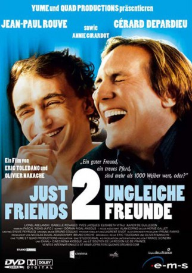

#5600 Zwei ungleiche Freunde
 
 IMDB-Wertung: 6.1 / 10
IMDB-Wertung: 6.1 / 10  Metascore: 0
Metascore: 0 
Die zwei Freunde Claude und Serge sind von ihrem Temperament her grundverschieden. Ähnlichkeiten ergeben sich nur, wenn sie versuchen eine Beziehung mit einer Frau zu führen, denn beide scheitern gleichermaßen. Während Claude schlichtweg zu schüchtern ist, um überhaupt eine Beziehung anzufangen, geschweige denn eine Frau kennen zu lernen, ist Serge zu sprunghaft, um eine Beziehung zu führen. Zusammen begeben sie sich auf der Suche nach der großen Liebe in allerlei kuriose Situationen, von der Selbsthilfegruppe über Speed-Dating bis zu Hochzeitsfeiern fremder Leute – auf der Jagd nach der passenden Frau ist ihnen kein Weg zu weit.
Jahr: 2005
Dauer: 100 Minuten
FSK: 12
Land: Frankreich Studio: 3L FilmverleihTonspuren:
Untertitel:
Auflösung: 1080p (1920x800) Größe: 6471 MB
Genre: Drama, Komödie, Liebe
Regisseur: Olivier Nakache, Eric Toledano
Drehbuch: Atom Egoyan
Soundtrack:
Darsteller:
 Jean-Paul Rouve als Claude Mendelbaum
Jean-Paul Rouve als Claude Mendelbaum Gérard Depardieu als Serge
Gérard Depardieu als Serge Annie Girardot als Mme Mendelbaum
Annie Girardot als Mme Mendelbaum Yves Jacques als Germain
Yves Jacques als Germain Mar Sodupe als Julia Marquez
Mar Sodupe als Julia Marquez- Tatiana Gousseff als Femme 1 speed-dating 1
 Jonathan Lambert als Totof
Jonathan Lambert als Totof- Jessalyn Wanlim als Fille épicerie New York
- Lionel Abelanski als Daniel
 Isabelle Renauld als Sophie
Isabelle Renauld als Sophie- Élisabeth Vitali als Véronique
- Xavier De Guillebon als Philippe
- Valérie Benguigui als Eva
- Flore Grimaud als Sylvie
- Caroline Frank als Manon
- Tilly Mandelbrot als Pauline
- Cassandra Harrouche als Justine
- Jérôme Benilouz als Le photographe
- François Berland als Le médecin
- Ellie Binder als Vieille dame New York
- Virginie Caliari als Barbara
- Idit Cebula als Femme 2 speed-dating 1
- Véronique Dossetto als Femme 3 speed-dating 2
- Mimi Félixine als Latifah
- Jean-Yves Freyburger als Le collègue de Serge
- Tony Gaultier als Brad Pitt
- Marie Gili-Pierre als Femme 6 speed-dating 1
- Thierry Godard als Mathias
- Catherine Hosmalin als Femme 6 speed-dating 2
- Lise Lamétrie als L'institutrice
- Pierre Lauth als Garçon supermarché
- Nathalie Levy-Lang als Femme 3 speed-dating 1
- Frédéric Maranber als Jean-Mi
- Jézabel Marques als Hôtesse mariage Manon
- Yacine Mesbah als Le forain
- Gérald Nguyen Ngoc als Serveur resto japonais
- Laurent Olmedo als L'animateur
- Christina Pinheiro als Femme 7 speed-dating 1
- Daphné de Quatrebarbes als Secrétaire Uni-Célib
- Chermisse Spruel als Serveuse New York
- Raphaël Toledano als Grand-oncle Manon
- Valentine Varela als Femme 2 speed-dating 2
- Michel Winogradoff als Serveur mariage Manon
- Jacqueline Staup als Tata Muguette
- Lysiane Meis als La femme de Mathias
- Michael Owen als Un businessman à New York
- André Crudo als Invité mariage Manon , uncredited
- Benjamin Lemaire als (uncredited
- Nancy Otero als Pedestrian , uncredited
Datei: X:\2005(N-Z)\Zwei ungleiche Freunde (2005, FSK12, 1920x800).mkv seit 21.02.2017
Festplatte: HD 2005(G-Z)-2006(A-Z)
 Es gibt insgesamt 50 Filme in der Gruppe '2005(N-Z)'
Es gibt insgesamt 50 Filme in der Gruppe '2005(N-Z)'